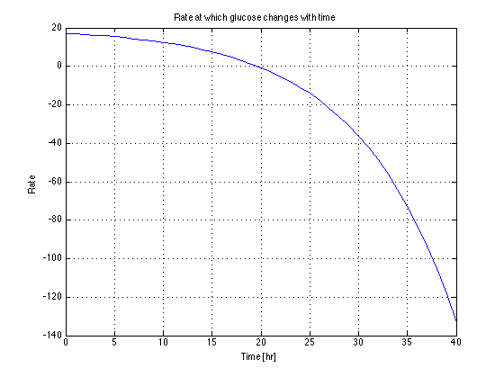

Fed Batch Fermentation Reactor
JCK 9/20/2012
2/18/2014 Removed dependencies on other Matlab functionsContents
- Fermentation Reactor (Murphy, Example 3.11)
- Mass Balances
- Extents of Reaction
- Part 1. Plot the rate at which glucose changes with time.
- Part 2. Plot mass of glucose and ethanol as a function of time
- Part 3. Calculate CO2 flow rate out as a function of time.
- Part 4. How long will it take for the glucose to drop to zero?
Fermentation Reactor (Murphy, Example 3.11)
----> CO2
|
_______________|________________
| |
| C6H12O6 --> 2 C2H5OH + 2 CO2 |
C6H12O6 -->| |
| C6H12O6 --> yeast |
|________________________________|- Inlet flow of glucose is 20 g/hr
- 10% of the glucose is converted to yeast
- The total consumption rate of glucose is Rg = -2.8*exp(0.1*t) g/hr
- Initial charge of glucose is 1000g
Mass Balances
After simplification, mass balances for the semi-batch fermentation reactor lead to a set of two differential equations and one algebraic
dmg --- = mg_in - MWg*X1 - MWg*X2; dt
dme --- = +2*MWe*X1 dt
0 = -mc_out + 2*MWc*X1
mg_in = 20; MWg = 180.16; MWe = 46.07; MWc = 44.01;
Extents of Reaction
There are two extents of reaction, X1 and X2. We know that the total rate of consumption of glucose is given in mass units bu
Rg = -MWg*(X1 + X2)
X1 accounts for 90% of the total consumption. So
0.9*Rg = -MWg*X1 0.1*Rg = -MWg*X2
Solving for X1 and X2
X1 = -(0.9*2.8/MWg)*exp(0.1*t) X2 = -(0.1*2.8/MWg)*exp(0.1*t)
These are implemented as Matlab functions of time.
X1 = @(t) (0.9*2.8/180)*exp(0.1*t); X2 = @(t) (0.1*2.8/180)*exp(0.1*t);
Part 1. Plot the rate at which glucose changes with time.
dmg --- = mg_in - MWg*X1 - MWg*X2; dt
% Set up time grid t = 0:40; % Plot plot(t, mg_in - MWg*X1(t) - MWg*X2(t)); xlabel('Time [hr]'); ylabel('Rate'); title('Rate at which glucose changes with time'); grid
Part 2. Plot mass of glucose and ethanol as a function of time
This requires solution of the differential equation. The following two functions compute values corresponding to the right hand side of the differential equations for mg and me, respectively.
rhs_mg = @(t,mg) mg_in - MWg*X1(t) - MWe*X2(t); rhs_me = @(t,me) +2*MWe*X1(t); tspan = [0 40]; subplot(2,1,1); ode45(rhs_mg,tspan,1000) xlabel('Time [hr]'); ylabel('[grams]'); legend('Glucose'); subplot(2,1,2); ode45(rhs_me,tspan,0) xlabel('Time [hr]'); ylabel('[grams]'); legend('Ethanol');

Part 3. Calculate CO2 flow rate out as a function of time.
clf; mc_out = 2*MWc*X1(t); plot(t,mc_out); xlabel('Time [hr]'); ylabel('grams/hr'); title('Flow rate of CO2 out of the fermentor');

Part 4. How long will it take for the glucose to drop to zero?
This is readily solved using some of the more advanced features of Matlab's ODE solvers. Here we simply demonstrate how this is done. The trick is to first solve over a time span long enough to include the zero crossing, then use fzero to solve for the zero crossing.
mg = ode45(rhs_mg,[0 50],1000); tzero = fzero(@(t)deval(mg,t),40); fprintf('Glucose concentration is zero at %6.1f [hrs]\n',tzero); me = ode45(rhs_me,[0 50],0); fprintf('Ethanol concentration at tzero is %6.1f [g]\n',deval(me,tzero));
Glucose concentration is zero at 42.8 [hrs] Ethanol concentration at tzero is 923.5 [g]